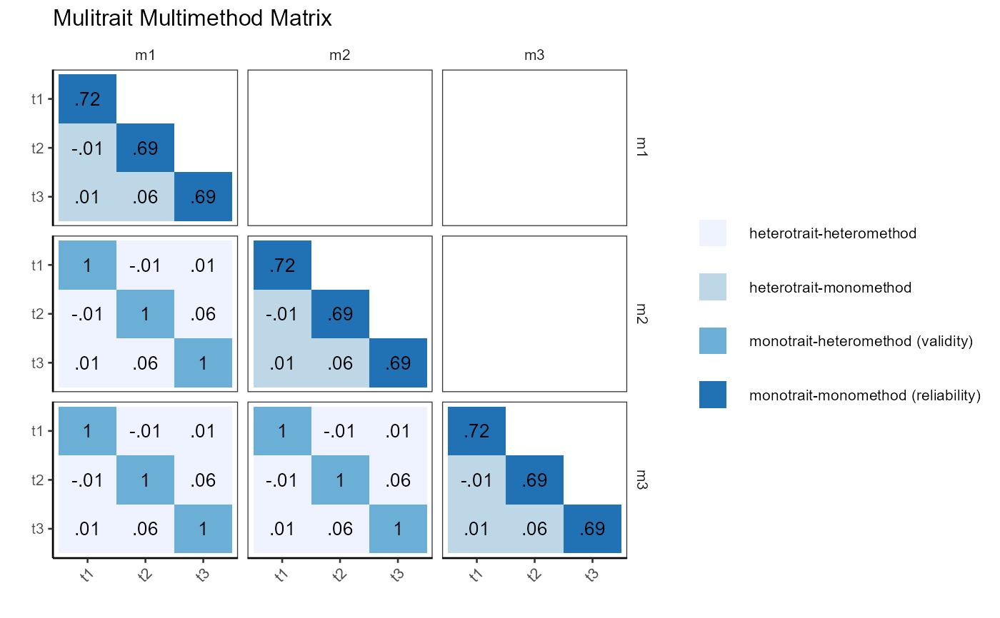

Visualises a Campbell-Fiske multitrait-multimethod matrix as a faceted tile plot. For each trait-method combination the function computes a scale score (row mean of items), calculates Cronbach's alpha (shown on the diagonal), and correlates all scale scores across traits and methods. Each cell is colour-coded by its MTMM classification, making it easy to evaluate convergent and discriminant validity at a glance.
Arguments
- df
A data frame in long format where each row corresponds to one subject under one method. Item response columns must be present for all traits and methods.
- key
A named list mapping trait names to character vectors of item column names, e.g.
list(t1 = c("x1","x2","x3"), t2 = c("x4","x5","x6")).- method
Character string giving the name of the column that identifies the measurement method for each row.
- subject
Character string giving the name of the column that identifies the subject (used to align scores across methods).
- title
Character string appended to the plot title. Default is
"".
Value
A ggplot object showing a faceted tile plot where rows and
columns correspond to traits, facets correspond to method pairs, cell
values are correlations (or alpha on the diagonal), and fill colour
encodes one of four MTMM relationship types:
- monotrait-monomethod (reliability)
Same trait, same method — Cronbach's alpha.
- monotrait-heteromethod (validity)
Same trait, different methods — convergent validity.
- heterotrait-monomethod
Different traits, same method — discriminant validity within method.
- heterotrait-heteromethod
Different traits, different methods — discriminant validity across methods.
Examples
set.seed(12345)
population_model <- "t1=~x1+.9*x2+.9*x3
t2=~x4+.9*x5+.9*x6
t3=~x7+.9*x8+.9*x9"
model_data <- lavaan::simulateData(population_model, sample.nobs = 1000)
model_data <- model_data[sample(1:1000, 1000, TRUE), ]
model_data <- rbind(model_data, model_data, model_data)
model_data$method <- c(rep("m1", 1000), rep("m2", 1000), rep("m3", 1000))
model_data$id <- rep(1:1000, 3)
key <- list(t1 = paste0("x", 1:3), t2 = paste0("x", 4:6), t3 = paste0("x", 7:9))
plot_mtmm(df = model_data, key = key, method = "method", subject = "id")
#> Warning: Using `size` aesthetic for lines was deprecated in ggplot2 3.4.0.
#> ℹ Please use `linewidth` instead.
#> ℹ The deprecated feature was likely used in the rwf package.
#> Please report the issue at <https://github.com/sedzinfo/rwf/issues>.
